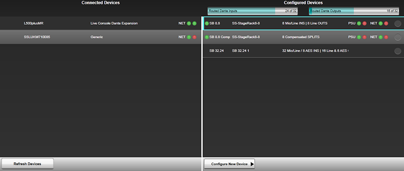
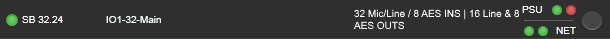
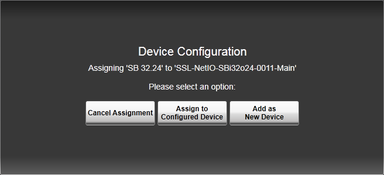
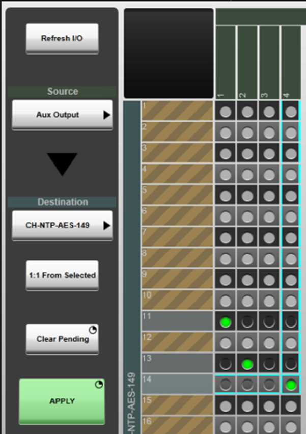

The following pages contain instructions on setting up SSL Live consoles for use with a Dante network, routing to and from Dante devices and controlling and gain sharing with SSL Net I/O Stageboxes:
- Setting Up Dante
- Virtual Tie Lines
- Dual Domain Routes and Configuring Dante Devices (this page)
- Network I/O Stageboxes and Devices
- BLII & X-Light Bridges
Configuring Dante Devices and Working with Dual Domain Routes
Dual Domain Routes
Dual Domain Routes are unique to SSL, allowing the console to interact directly with devices on the network, with no need to use Dante Controller to make routes.
As with normal Dante routes, by default Dual Domain Routes are created using unicast flows. If multicast flows are desired, these must be set up in Dante Controller in the usual way. Any existing unicast Dual Domain Routes from those transmit channels will be automatically converted to multicast. Any Dual Domain Routes subsequently created from those transmit channels will be multicast.
The Dante Configuration Page
Dante Devices must be configured in the console's Dante Configuration page before they can be routed to directly from the console using dual domain routes.
Go to MENU > Setup > I/O then tap Dante Configuration just below the Menu.
On the left of the page there is a list of Connected Devices. All Dante devices on the network will be listed here. Tap the Refresh Devices button to refresh the view if a correctly configured device does not appear in the list.
On the right of the page there is a list of Configured Devices. This is a list of all Dante devices that have been configured for use.

There are two resource bars above the Configured Devices list to indicate the total dual domain input and output routes available and how many are currently in use. The total number displayed will depend on sample rate, quantity of Virtual Tie Lines and whether a BLII/X-Light Bridge is being used. The resource bars fill with light or dark blue as dual domain routes are made:

Light Blue: Routes to offline Configured Devices (Devices not connected to the network, used for preparing showfiles prior to stageboxes being physically present)
Dark Blue: Routes to online Configured Devices (Devices connected to the network)
There are a series of status LEDs for each device:

There are two NET LEDs showing the network status of the Primary and Secondary network connection.
| Colour | Meaning |
|---|---|
| Green | Connected |
| Red | Not Connected or Fault |
When an SB 16.12 or SB 32.24 is connected with Networks A+B Linked, the Primary and Secondary network status will always report that both are connected, even if that is not the case. In this mode please consult the NET A and NET B LEDs on the front of the unit for Primary and Secondary connection status:
| Colour | Meaning |
|---|---|
| Green | Dante Primary and Secondary connected |
| Red | Dante Primary not connected or fault |
| Flashing Red | Dante Secondary not connected or fault |
For Configured Devices, there is a single LED to the left. This shows whether the device is online or offline.
| Colour | Meaning |
|---|---|
| Green | Online |
| Red | Offline - Device has previously been online (in this showfile) |
| Grey | Offline - Device was created offline and has never been online (in this showfile) |
For SSL Net I/O Stageboxes, there are also PSU status LEDs.
| Colour | Meaning |
|---|---|
| Green | PSU On and functioning correctly |
| Red | PSU Off or fault |
Tapping on any device in the Connected or Configured Devices list will bring up a Detail View for that device. If the device is a Connected Device, stagebox settings cannot be edited. If the device is a Configured Device, all stagebox settings and parameters (e.g. gain, +48V, operating level etc.) can be changed here.

The following information is displayed in the Setup tab:
- Dante device name (This should be changed from Dante Controller, not from the console)
- I/O capacity
- PSU status for SSL devices
- Primary and Secondary Network Status
- IP address (which will be red if there is a subnet discrepancy)
- Dante and console sample rates (which will be red if there is an sample rate discrepancy, and the console's Dante SRC is off)
- Device Temperature if available
Dante routes are associated with device names. So changing Dante device names will remove all routes. Renaming devices should be changed from Dante Controller, not on the console. A warning dialogue will appear in Dante Controller before device names are changed to inform the user of a break in audio routes.
Other information about the stageboxes can be viewed and edited from the relevant tabs on the right hand side: Inputs, Outputs etc. The individual Input and Output channel names listed in these tabs will correspond to the channel labels set in Dante Controller.
Configuring Online Dante Devices
Now we will configure an online device for Dual Domain Routing. An online device is a device that is connected to the network.
First, engage Edit. Then tap and drag a device in the Connected Devices list on the left. A + sign will appear at the bottom of the Configured Devices list once you begin to drag the device. Drop the device onto the + sign.
This device has now been added to the Configured Devices List and you can now route to/from it in the routing view or XY Routing page.
Configuring Offline Dante Devices
Offline devices can be added, configured and routed to/from even when the physical device is not present.
These settings can then be associated with online devices when the units are available (see below).
First, engage Edit. Then tap Configure New Device and select one of the devices from the list:
- Net I/O SB 8.8*
-
- Main (Uncompensated)
- Compensated Splits
- Net I/O SB i16*
-
- Main (Uncompensated)
- Compensated Splits
- Net I/O SB 16.12*
-
- Main (Uncompensated)
- Compensated Splits
- Net I/O SB 32.24*
-
- Main (Uncompensated)
- Compensated Splits
- Net I/O A16.D16
- Net I/O A32
- Net I/O D64
- Net I/O GPIO32
- Net I/O MADI Bridge
- SSL Console
-
- Live Dante Expansion (An SSL Live console with a Dante Expander Module fitted)
- Net I/O BLII Bridge (An SSL Live console connected to a BLII Bridge)
- Net I/O XL Bridge (An SSL Live console connected to an X-Light Bridge)
- System T Dante HC (SSL System T broadcast console system)
- System T Dante HC SRC (SSL System T broadcast console with SRC capabilities)
- Shure
-
- ANI22 (See Shure ANI devices)
- ANI4IN (See Shure ANI devices)
- Axient AD4D (See Shure Wireless devices)
- Axient AD4Q (See Shure Wireless devices)
- ULXD4D (See Shure Wireless devices)
- ULXD4Q (See Shure Wireless devices)
- Generic Dante (Any other Dante device)
* When an SSL Network I/O Stagebox is connected to a Dante network, it will appear on the console as two separate Dante devices: The Main uncompensated/gain dependant device and the Comp gain compensated device. See Gain Sharing for further details.
Select the device you wish to add and an offline device will be added to the Configured Devices list. The new device's status LED will be Grey to show that it has never been online.
You can now route to/from this device in any routing view (path Inputs/Outputs, FX Rack etc.) or XY Routing page.
Making Dual Domain Routes
Dual Domain Routes can be made to any configured Dante device in the normal way using the routing view or the XY Routing page. When a Dual Domain Route is made to an online configured Dante device on the console, you will see the route created on the Dante network in Dante Controller.
Important:Please do not attempt to make or unmake Dual Domain Routes from Dante Controller. All Dual Domain Routes must be made or unmade from the console.
Linking an Offline Device with an Online Device
When the device name and type of an offline Configured Device matches that of a Connected device, the two will be automatically linked. The previously offline device will come online.
All settings on the stagebox that were stored in the offline device will be pushed to the stagebox* and routes to/from the offline device will be assigned to the online device**. This allows for a power down or disconnection without loss of routes or device settings.
*Providing all ownership requirements have been satisfied (see Ownership)
**Providing there are no routing conflicts with existing routes between this device and other devices on the network (see Routing Conflicts).
To link an offline and an online device, first tap Edit, and drag the online Connected Device onto the corresponding offline Configured device.

Tap Assign to Configured Device to confirm.
Please note:Devices must be of the same type for this to work. If they are not, the console will not allow linking.
The online and offline devices have now been linked and all settings and routes of the offline device will be assigned to the online device (providing there are no Ownership or Routing conflicts.
You can also use the above process to link an existing online Configured Device with a different online Connected Device.
Deleting Configured Devices
Deleting a device will move the online device back to the Connected Devices list. All routes between the console and this device will be unmade.
To delete a Configured Device, tap Edit, select a device in the Configured devices list using the circles to the right. Then press and hold Delete.
Unlinking
Unlinking separates the online device from the device routes and settings and saves the routes and settings within an offline device.
Unlinking a device will move the online device back to the Connected Devices list. An offline device with all the routes and settings will be retained in the Configured Devices list.
To Unlink a device, tap Edit, select a device in the Configured devices list using the circles to the right. Then press and hold Unlink.
Routing Conflicts
A routing conflict occurs when the console attempts to make a route to a Dante device on the network, but there is already a Dante route occupying this routing point.
This may occur in the following situations:
- When the operator manually makes a route between the console and another Dante device (from the console)
- When a showfile is loaded containing Dante routes
- When the console is powered on and the most recent showfile contains Dante routes
- When a offline Configured Device with routes saved is linked to an online Connected Device
First come, first served
When devices come online on the network or new showfiles are loaded, Dante routing operates on a first come, first served basis.
So if there is a conflict between two routes to the same destination, the first route that was created will be retained. Any routes that are subsequently made to the same destination will not be made. This means Dante routes can never be automatically unmade.
However, the console can manually overwrite existing routes in the XY Routing page. See below Manually Overwriting Existing Dante Routes.
When the console is powered off or goes offline
When the console is powered down correctly from the main screen, all Dante routes to/from the console are unmade. This allows Dante devices that previously contained a route to/from the console, to be freed up, and those routing points can now be used by other Dante devices on the network.
When the console loses power, or is powered off incorrectly (for example by pulling out the PSU cables or switching the PSUs off), all Dante routes to/from the console are retained. This causes any routing points on other Dante devices that were in use by the console, to be unavailable for further routing.
Note:For this and many other reasons, SSL recommends that the SSL Live consoles are always powered down correctly via the main screen (MENU > Setup > System / Power menu > System tab > Power Off Console button). Please do not pull out the PSU cables or switch off the PSUs prior to a correct shut down from the main screen.
If the console loses its connection to the Dante network and goes offline, all Dante routing will be retained by the devices on the network. So when the console comes back online, routing does not need to be re-made.
When the console comes online or when a showfile is loaded
Loading showfiles containing dual domain routes can cause routing conflicts with routes already on the network. This can also occur when the console is connected to the network or powered on and the most recent showfile is loaded automatically.
For example:An L550, an L200 and one SB 32.24 are on a Dante network. SB 32.24 input 1 is routed to the input of Channel 1 on the L550. And the output of Channel 1 is routed to SB 32.24 output 1. The L200 is connected to the network but in the current showfile there are no routes between the console and the SB 32.24.
A new showfile is loaded on the L200. In the new showfile SB 32.24 input 1 is routed to Channel 32 on the L200. And the output of this channel is routed to output 1 on the SB 32.24.
For the transmit channels of the SB 32.24, this is not a problem. Input 1 on the SB 32.24 can be sent to both the L550 and the L200 at the same time.
For the receive channels of the SB 32.24, there is a routing conflict. The SB 32.24 cannot receive a route from both the L550 and the L200 at the same time.
Following Dante routing's first come, first served basis, the L550's route will be retained. This is because the L550's route was already valid at the time the L200 attempted to make its route. The L200's route will not be made.
This is to avoid active routes being stolen by devices when they come online.
Note: The first come, first served basis is a Dante concept and applies to SSL and non-SSL Dante devices alike.The same first come, first served basis will apply if a Configured Device is assigned to a new Connected Device with existing routes. To check if the network route has been created please use the Routing tab of Dante Controller.
Manually Overwriting Existing Dante Routes
Dante routes can never be automatically unmade. But they can be manually overwritten by the console. In the XY Routing page, the engineer can overwrite existing routes by creating new routes to the same destinations. This is not possible from the Routing View.
For example:An L550, an L200 and one SB 32.24 are on a Dante network. The output of Channel 1 on the L550 is routed to SB 32.24 output 1.
On the L200, the engineer goes to XY Routing and tries to make a route from the output of Channel 2 on the L200 to the SB 32.24 output 1.
This has caused a routing conflict. The SB 32.24 cannot receive a route from both the L550 and the L200 at the same time.
Since the L200 has manually attempted the route (i.e. the route was a choice by the engineer), the L200 can overwrite the existing route between the L550 and the SB 32.24. The route from the L550 will be unmade, and the route from the L200 will be made.
Dante Routes Between Two Other Dante Devices
Routes between any two other Dante devices on the network can also be manually made or unmade from the XY Routing page.
If a route between two other Dante devices (i.e. not involving the console) is made from the console, this route will be saved in the console's showfile. This route will be recalled when the showfile is loaded on the console (provided devices with the same Dante names are on the network and subject to any routing conflicts, see above Routing Conflicts).
Dante Allowed Devices List
The beauty, and challenge, of Dante and AoIP is the freedom to connect anything, anywhere. SSL Live tackles this by integrating the Dante API with automatic device discovery, offering a simple drag-and-drop interface for adding discovered devices into the console's configuration for streamlined routing. For fixed installations on larger networks, SSL Live's 'Dante Allowed Device List' lets you manage which Dante devices are visible and routable on the console, ideal for fixed installations where freelance engineers access the console, but certain resources must remain restricted.
Enabled with a Dante Allowed Device List licence, this feature limits visible devices to only those in the 'AllowedDevicesConfig.xml' file, maintaining all standard console functionality if unlicensed. Both SSL Network I/O and third-party devices are supported, and while Rx subscriptions remain manageable via Dante Controller, the SSL interface marks restricted Rx channels with a hatched brown overlay in the routing GUI, preventing routing changes or showfile overwrites. Please speak to your SSL sales or support rep to discuss workflow and licensing if you have a use case for Dante Allowed Device List.
Dante Allowed Device List keeps networked resources secure, ensuring only selected devices and channels are accessible. Perfect for large, flexible audio networks.

The Allowed Devices list is based on device name rather than Dante device UID. This has the following implications:
- Devices can be configured (and named) offline (on a console or SOLSA) and routes stored in showfiles, which can later be played out onto the network when an Allowed device of the correct name is detected.
- Changing the name of a device on the Dante network will require the Allowed list to be updated (requiring service page access) on each console utilising this feature.
- A device may be renamed in Dante Controller (or other capable control interface) to match a device name present in the Allowed list to enable that device to be used on the console (subject to the restricted Rx channels defined in the Allowed list) without requiring modification to the Allowed list.
Useful Links:
Setting Up DanteNetwork I/O Stageboxes and Devices
Virtual Tie Lines
BLII & X-Light Bridges
Local/MADI I/O Configuration
Setup: Installation Guide
Index and Glossary